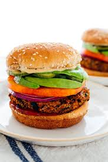
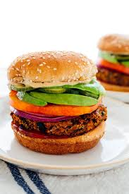
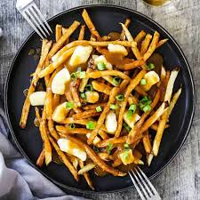
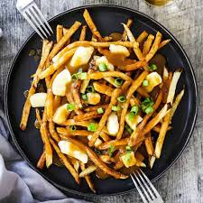
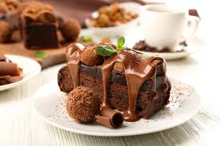
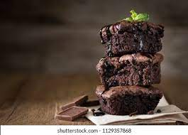
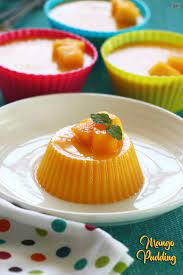
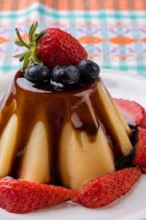

Choose Your Favourite Food
INFO
Ziana Mehnaz Ruhee
ID:WB2302031
Contact With Us
Fast Food
- Fast Food
- Burger
- Burgers are more than just a meal; they hold a special place in the hearts of many food enthusiasts, including myself. The reasons for loving burgers are as diverse as the toppings that adorn them.Burgers, the epitome of deliciousness and convenience, have captured the hearts and taste buds of food enthusiasts worldwide. A classic burger is a handheld masterpiece that brings together a juicy patty, nestled between two soft buns, accompanied by an array of delectable toppings.No matter your preference, biting into a burger is an experience that brings joy, comfort, and a sense of indulgence. So, the next time you're seeking a satisfying meal that combines simplicity and bold flavors, look no further than the timeless allure of a mouthwatering burger 🍔 .
- Pizza
- Pizza, the beloved culinary creation, holds a special place in the hearts of many, including myself. The reasons for loving pizza are as diverse as the array of toppings that adorn it.
One of the main reasons for adoring pizza is its versatility. Whether you crave a classic Margherita with its harmonious blend of tomato sauce, mozzarella, and basil or prefer adventurous combinations like barbecue chicken with smoky flavors, there is a pizza to satisfy every taste preference. The possibilities are endless, allowing you to tailor your pizza to your liking and explore new flavor combinations 🍕.
- French fry
- French fries, the golden and crispy delight, have earned a special place in the hearts of food enthusiasts around the world, including mine. The reasons for loving French fries are as irresistible as the aroma that wafts from a freshly cooked batch.
First and foremost, the texture of French fries is truly addictive. The perfect fry strikes a delicate balance between a crispy exterior and a fluffy, tender interior. Biting into a well-prepared French fry offers a satisfying crunch, followed by a melt-in-your-mouth sensation that is simply delightful 🍟.

Burger
 

Pizza


French Fries
 

Desserts
- Dessert
- Chocolate Cake
- Chocolate cake, the epitome of indulgence and delight, holds a special place in the hearts of dessert lovers worldwide, including mine. The reasons for adoring chocolate cake are as rich and complex as the decadent flavors it offers.One of the primary reasons for loving chocolate cake is its irresistible taste. The rich, velvety chocolate flavor tantalizes the taste buds and provides a moment of pure bliss with every bite. Whether it's a moist and fudgy chocolate cake or a light and airy chocolate sponge, the combination of cocoa's depth and sweetness creates an unrivaled sensory experience that satisfies cravings and brings immense pleasure 🍮.
- Pudding
- While many people find great pleasure in the creamy indulgence of pudding, it's completely understandable that it may not be everyone's cup of tea.One of the primary reasons for not liking pudding is a personal preference for texture. Pudding is known for its smooth and silky consistency, which can be off-putting to those who prefer more varied or contrasting textures in their desserts. The lack of crunch or chewiness in pudding might not align with certain individuals' preferences 🍰.

Chocolate Cake


Pudding


Question and Answer
What is ol,ul in html?Write your answer here
In HTML, "ol" and "ul" are two types of list elements used to create ordered (numbered) and unordered (bullet-pointed) lists, respectively.
What is td ,th in html?Write your answer here
In HTML, "td" and "th" are table-related elements used to define cells within an HTML table."td" stands for "table data." It is used to define a standard data cell within a table. Each "td" element represents a cell that contains regular data or content.
Which tags define hyperlink in html?Write your answer here
The "a" tag is used to define hyperlinks, also known as anchor links, in HTML.The "a" tag stands for "anchor." It is used to create a link that allows users to navigate to another web page, a specific section within the same page, or external resources such as documents, images, or videos.